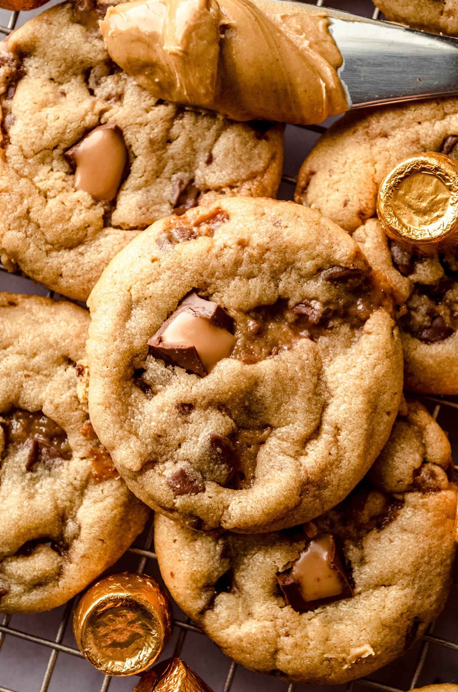

Sumbitches
Home

Description
A version of How I Met Your Mother’s famous ‘Sumbitch’ Cookies, combining Peanut Butter, Chocolate, and Caramel! Soft, chewy, and totally addicting!
Results may vary, the more your gf loves you the better they are!!
Ingredients
- 1 cup butter, softened
- 1 cup granulated sugar
- 1 cup firmly packed brown sugar
- 1 cup creamy peanut butter
- 2 large eggs
- 1 tsp. vanilla extract
- 2 cups all-purpose flour
- 1 tsp. baking soda
- 1/2 tsp. salt
- 36 bite-size chocolate-covered caramel candy bars
Steps
- Beat first 4 ingredients at medium speed with an electric mixer until smooth. Add eggs and vanilla, and beat until blended.
- Stir together flour and next 2 ingredients in a small bowl. Add to butter mixture, beating until blended. Cover and chill 30 minutes.
- Preheat oven to 350°F. Shape a 2 tbsp. dough around each mini candy bar, using lightly floured hands, and roll into balls. Place 3 inches apart on ungreased or parchment paper-lined baking sheets.
- Bake for 13 to 14 minutes or until lightly browned. Cool on baking sheets for 5 minutes. Transfer to wire racks.